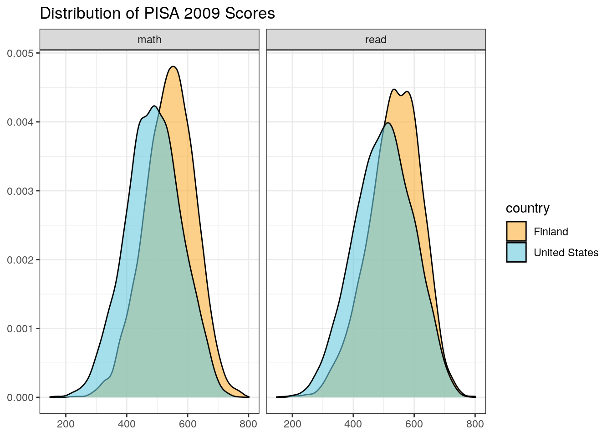
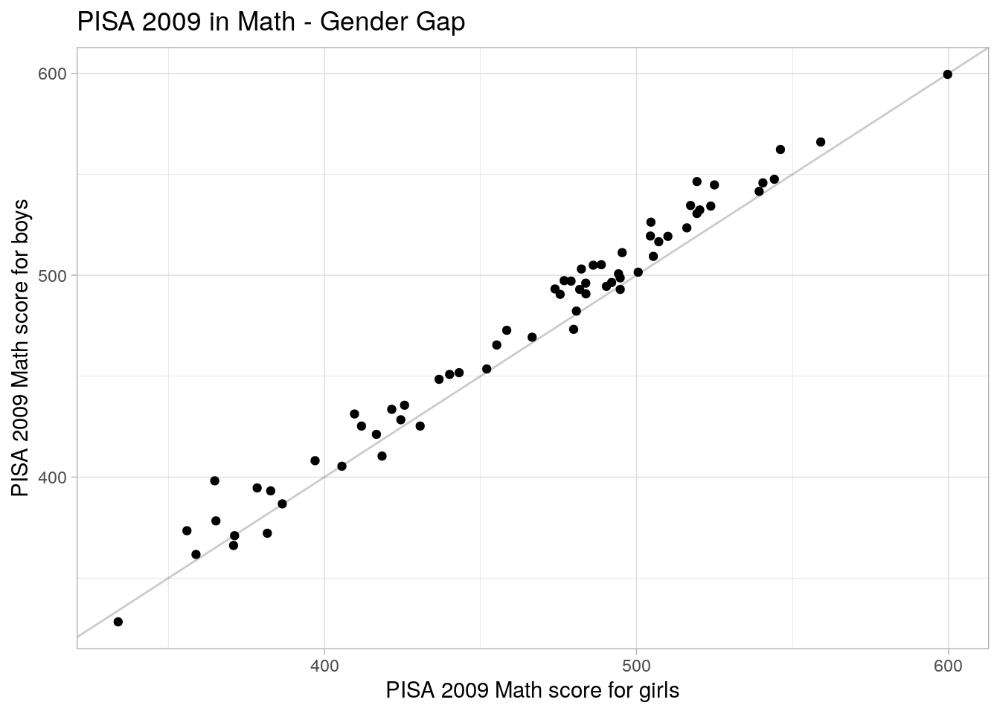

Chapter 4 Reshaping Data
{tidyr} basics
The book R for Data Science is a very helpful reference guide. Chapter 12 covers many of the topics covered in this section, and may be useful as a resource later or to dive deeper into a topic.
Topics:
- Tidy data
- Pivoting
- Longer
- Wider
- Separate & unite
4.1 An example
For this example we begin with a subset of the 2009 Program for International Student Assessment (PISA) data.
## load data
url <- "https://raw.githubusercontent.com/haleyjeppson/R4QM/main/data/pisas09_subset.csv"
pisas <- readr::read_csv(url)
pisas## # A tibble: 475,460 × 5
## country sex math read weight
## <chr> <chr> <dbl> <dbl> <dbl>
## 1 Albania Male 333. 279. 5.40
## 2 Albania Male 344. 327. 5.40
## 3 Albania Male 456. 423. 5.40
## 4 Albania Female 394. 420. 5.70
## 5 Albania Female 277. 375. 5.70
## 6 Albania Male 514. 544. 5.40
## 7 Albania Female 425. 477. 5.70
## 8 Albania Female 322. 339. 5.70
## 9 Albania Male 332. 319. 5.40
## 10 Albania Male 387. 430. 5.40
## # … with 475,450 more rowsPivot to long form
Say we want to compare math and reading scores across a subset of countries. To do so, we will need to reshape our data into long form:
## in long form
pisas_long <- pisas %>%
select(-sex) %>%
pivot_longer(cols = math:read, names_to = "item", values_to = "score")
pisas_long## # A tibble: 950,920 × 4
## country weight item score
## <chr> <dbl> <chr> <dbl>
## 1 Albania 5.40 math 333.
## 2 Albania 5.40 read 279.
## 3 Albania 5.40 math 344.
## 4 Albania 5.40 read 327.
## 5 Albania 5.40 math 456.
## 6 Albania 5.40 read 423.
## 7 Albania 5.70 math 394.
## 8 Albania 5.70 read 420.
## 9 Albania 5.70 math 277.
## 10 Albania 5.70 read 375.
## # … with 950,910 more rowspisas_long %>%
filter(country %in% c("Finland", "United States")) %>%
ggplot(aes(x = score, weight = weight, fill = country)) +
geom_density(alpha = 0.6) +
facet_wrap(~item) +
theme_bw() +
scale_fill_manual(values = c("#69cadf", "#f4602a", "#fbb03b", "#3273c2")[c(3,1)]) +
labs(title = "Distribution of PISA 2009 Scores", x = NULL, y = NULL)
Pivot to wide form
Say we want to plot male math scores against female math scores. To do so, we will need to summarize our data and then reshape our data into a wider format:
## in wide form
pisas_wide <- pisas %>%
select(-read) %>%
group_by(country, sex) %>%
summarise(math = weighted.mean(math, weight, na.rm = TRUE)) %>%
pivot_wider(names_from = sex, values_from = math)
pisas_wide## # A tibble: 65 × 4
## # Groups: country [65]
## country Female Male `NA`
## <chr> <dbl> <dbl> <dbl>
## 1 Albania 382. 372. NA
## 2 Argentina 383. 393. NA
## 3 Australia 510. 519. NA
## 4 Austria 486. 505. NA
## 5 Azerbaijan 426. 436. NA
## 6 Belgium 505. 526. NA
## 7 Brazil 378. 395. NA
## 8 Bulgaria 431. 425. NA
## 9 Canada 520. 532. NA
## 10 Chile 410. 431. NA
## # … with 55 more rowsggplot(pisas_wide, aes(x = Female, y = Male)) +
geom_abline(alpha = 0.2) +
geom_point() +
labs(title = "PISA 2009 in Math - Gender Gap",
x = "PISA 2009 Math score for girls",
y = "PISA 2015 Math score for boys") +
theme_light()